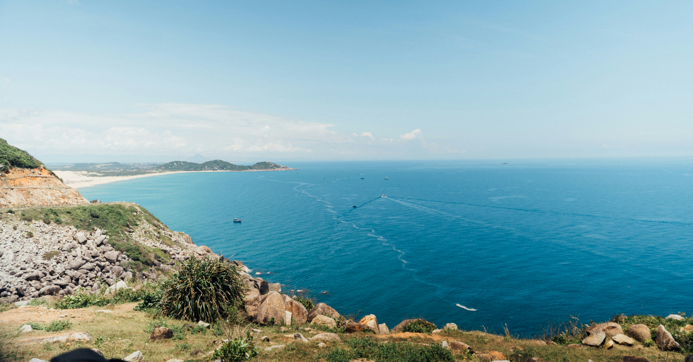
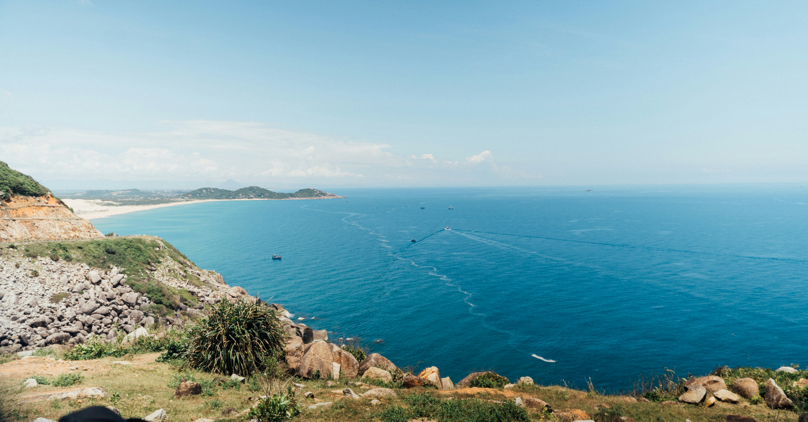

+120
Especies Registradas
+10
Playas Protegidas
+300
Voluntarios Activos
Protegiendo la Vida Marina
BIO OCEAN es un sistema integral desarrollado para la gestión, monitoreo y conservación de especies marinas.
Su objetivo principal es proporcionar una herramienta digital que facilite el registro, análisis y seguimiento de datos ecológicos sobre la vida acuática, apoyando así la investigación científica, la sostenibilidad ambiental y la toma de decisiones responsables.
Objetivos del sistema:
- Centralizar información clave sobre especies marinas.
- Facilitar el monitoreo de poblaciones y hábitats.
- Apoyar proyectos de conservación con datos confiables.
- Fomentar la educación ambiental.
- Generar reportes e informes científicos.
¿Por qué es importante proteger los océanos?
Los océanos cubren más del 70% de la superficie del planeta y son fundamentales para la vida en la Tierra. No solo regulan el clima, sino que también proporcionan oxígeno, alimentos y medios de vida a millones de personas. Conservarlos es vital para el equilibrio ecológico y el bienestar de las generaciones futuras.
¿Qué especies estamos protegiendo?
En BioOcean nos enfocamos en el seguimiento y preservación de especies marinas que se encuentran en riesgo por causas como la pesca ilegal, la contaminación y la pérdida de hábitat. Algunas de las especies más sensibles actualmente monitoreadas incluyen:
- Tortuga carey
- Manatí del Caribe
- Atún rojo del Atlántico
- Caballito de mar
- Tiburón martillo